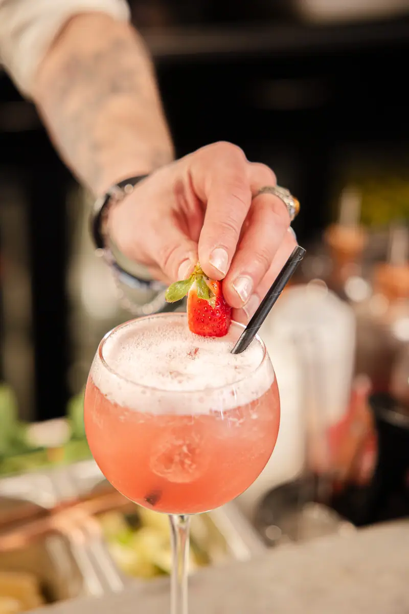
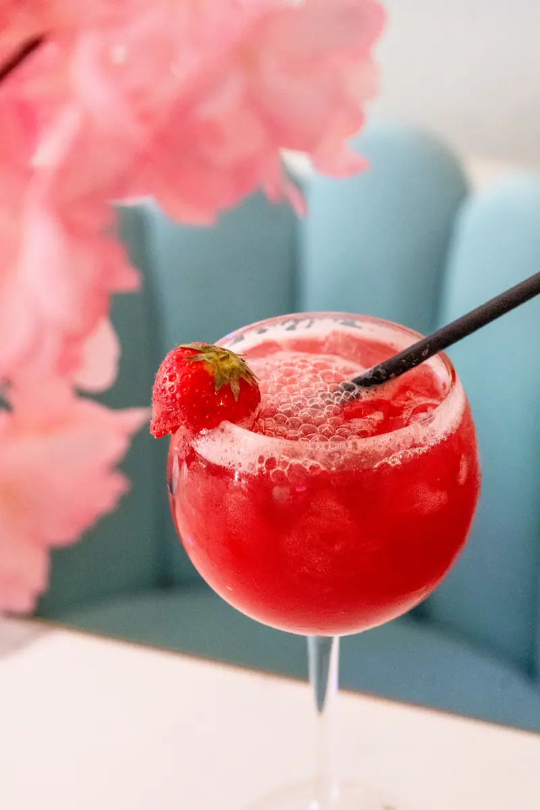
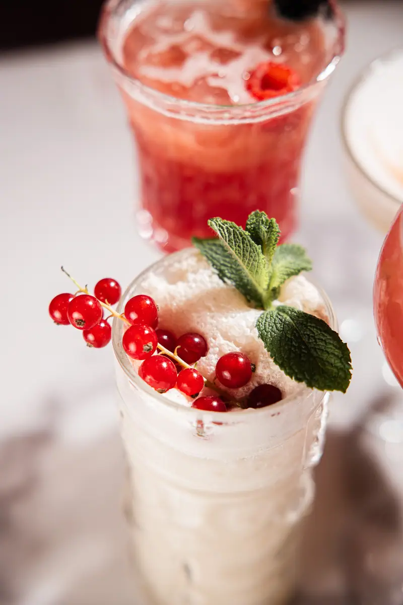

Le dernier verre
des Grands Boulevards.
La Maison Louisette est ouverte de 8 h à 2 h, sept jours sur sept. Le comptoir sert le café du matin, l'apéritif de fin de journée et le dernier cocktail de la nuit. Le bar se trouve au 8 boulevard Saint-Denis, à Paris 10e, au pied du métro Strasbourg-Saint-Denis.
Au bar



Un comptoir, du matin à deux heures.
Le bar occupe la première salle, dès l'entrée. Le marbre, le laiton et le velours rose composent le décor. Les néons roses s'allument à la tombée du jour. La mezzanine surplombe la salle et reçoit les tablées qui veulent un peu de recul. La terrasse fleurie donne sur le boulevard, aux beaux jours.
Le service ne s'interrompt pas entre le déjeuner et le dîner. Vous pouvez venir boire un verre en milieu d'après-midi comme au cœur de la nuit, dans la même amplitude de 8 h à 2 h. Le comptoir et la terrasse accueillent sans réservation, selon les places disponibles. Pour une table, mieux vaut réserver, en particulier en fin de semaine. Le reste des informations utiles figure sur la page des infos pratiques.
Le décor
Velours rose, marbre et laiton pour le comptoir. Néons roses pour le soir. Une terrasse fleurie et une mezzanine pour les deux autres ambiances de la maison. Le même lieu change d'usage selon l'heure : bureau de passage le matin, salle de déjeuner à midi, bar le soir.
Trois lignes 4, 8 et 9
La station Strasbourg-Saint-Denis dessert les lignes 4, 8 et 9. Elle se trouve devant l'adresse. Les trois lignes traversent Paris d'est en ouest et du nord au sud, ce qui rend le retour simple depuis la plupart des quartiers, y compris tard.
Les cocktails.
La carte se lit en trois parties : les signatures, les classiques et les cocktails sans alcool. Les préparations se font au comptoir, à la commande.
Spritz Saint Germain, Negroni, Espresso Martini, Pornstar Martini, Whisky Sour, Havane parisienne, Patrón Paloma, Louisette Fatal, La Reine Louisette, Raspberry Sour.
Aperol Spritz, Mojito, Moscow Mule, Piña Colada, Cosmopolitan, Mai-Tai, Caipirinha, Margarita, Old Fashioned.
Virgin Mojito, Virgin Piña Colada, Red Tea, Basilmash fizz. La même préparation au comptoir, sans alcool.
Deux noms reviennent souvent au comptoir : la Louisette Fatal et la Reine Louisette. Ce sont les deux créations qui portent le nom du lieu. Si vous hésitez, décrivez ce que vous aimez au barman plutôt que de choisir une ligne de la carte. Les cocktails sans alcool suivent la même préparation que les autres et figurent sur la même carte.
Les vins au verre et les bières.
Dix-sept vins sont servis au verre. La sélection couvre le rouge, le blanc et le rosé, avec des appellations françaises et italiennes.
| Rouges au verre | Côtes du Rhône, Bordeaux, Nero d'Avola, Pinot Noir, Brouilly, Saumur-Champigny, Saint-Émilion, Montepulciano |
|---|---|
| Blancs au verre | Pinot Grigio, Chardonnay, Sauvignon, Pouilly-Fumé, Petit Chablis, Cheverny, Tariquet |
| Rosés au verre | Minuty, Bardolino |
| Bières pression et bouteille | Louisette, Affligem, Affligem blanche, Gallia West IPA, Desperados, Corona, Heineken, Heineken 0.0 |
La Louisette est la bière qui porte le nom de l'établissement. Elle est servie à la pression, aux côtés de l'Affligem, de l'Affligem blanche, de la Gallia West IPA, de la Desperados, de la Corona et de la Heineken. La Heineken 0.0 complète la carte pour ceux qui ne boivent pas d'alcool, aux côtés des mocktails. Le champagne se sert à la coupe comme à la bouteille.
Les soirées DJ.
Un DJ joue du jeudi au samedi. La salle passe alors en configuration soirée : la musique monte, les néons roses éclairent le velours, le comptoir reste ouvert jusqu'à 2 h. L'entrée est libre.
- Les soirées DJ ont lieu du jeudi au samedi.
- Le service s'arrête à 2 h, tous les jours de la semaine.
- La salle, la mezzanine et la terrasse peuvent être réservées pour un événement privé.
- La capacité du lieu atteint 250 personnes assises et 400 en format cocktail.
Pour un anniversaire, un afterwork ou une soirée d'entreprise, le bar se réserve en partie ou en totalité. Les formats et les capacités sont détaillés sur la page consacrée aux groupes et à la privatisation.
Avant et après le théâtre.
Le quartier compte plusieurs salles de spectacle. Le Grand Rex est à sept minutes à pied du 8 boulevard Saint-Denis. Les théâtres du boulevard sont dans le même périmètre.
Avant la représentation
Un verre au comptoir tient dans le créneau qui précède le lever de rideau. Prévenez le personnel de votre horaire de spectacle en vous installant : le service s'organise en fonction de l'heure que vous annoncez.
Après le rappel
Le service continue jusqu'à 2 h. Peu d'adresses du quartier restent ouvertes aussi tard. Vous pouvez donc prolonger la soirée sans changer de lieu, un soir de semaine comme un samedi. Les salles voisines et les distances à pied sont listées sur notre page sur le quartier des théâtres.
Le bar fait partie d'une brasserie qui sert aussi à manger, du petit-déjeuner au dîner tardif. L'ensemble de l'adresse est présenté sur l'accueil de La Maison Louisette.
Un verre ce soir ?
Le comptoir accueille selon les places disponibles. Pour une table, réservez en ligne ou appelez-nous.